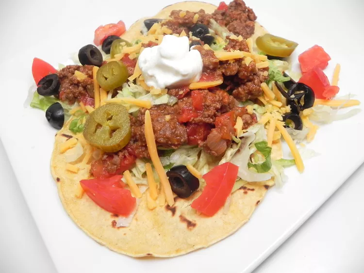

Tacos de carne

Descpricion
Estos tacos de chorizo y carne molida son una comida rápida y sencilla. Aunque pueden ser un poco engorrosos, son deliciosos y perfectos para las noches ajetreadas. Prueba a usar las sobras para hacer nachos y darle un toque diferente. Sírvelos con tus ingredientes favoritos para tacos
ingredientes
- 1 libra de carne molida
- libra de salchicha de cerdo picante
- 1 cebolla mediana , picada
- ½ paquete (1,25 onzas) de mezcla para condimentos para tacos
- 1 lata (10 onzas) de tomates cortados en cubitos y chiles verdes (como RO*TEL®)
- 1 paquete (12 onzas) de tortillas de maíz, calientes
Pasos
- Calienta una sartén grande a fuego medio-alto. Cocina y revuelve la carne, la salchicha y la cebolla en la sartén caliente hasta que la carne esté dorada y desmenuzada, de 5 a 7 minutos. Escurre y desecha la grasa. Incorpora el condimento para tacos hasta que la carne esté bien cubierta. Agrega los tomates picados y la salsa de tomate; cocina a fuego lento hasta que se calienten. Vierte el relleno sobre las tortillas.
Home